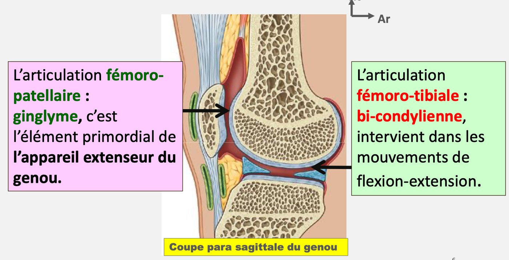
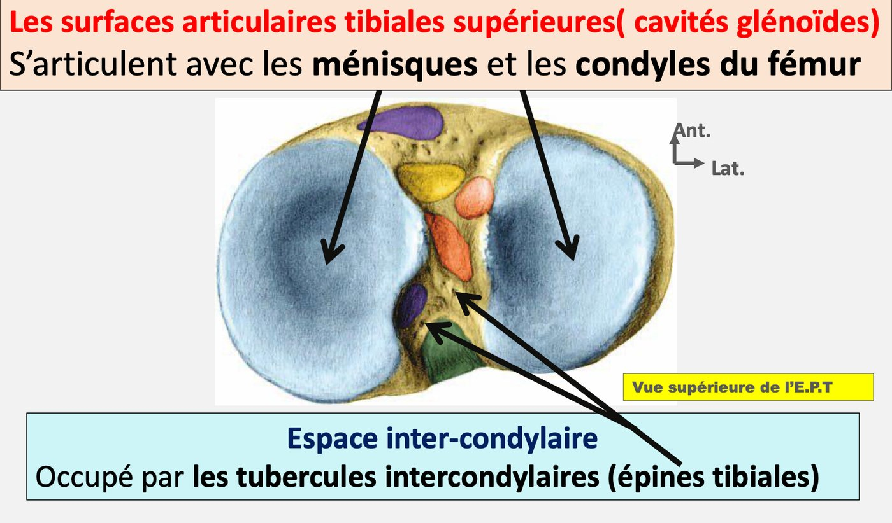
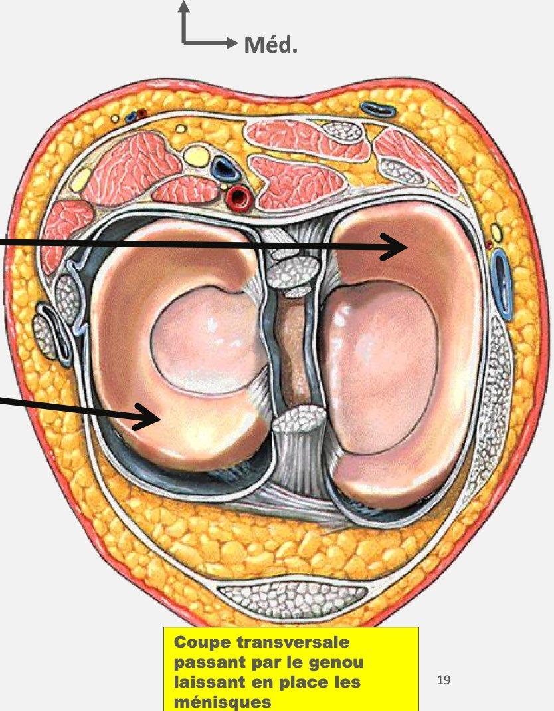
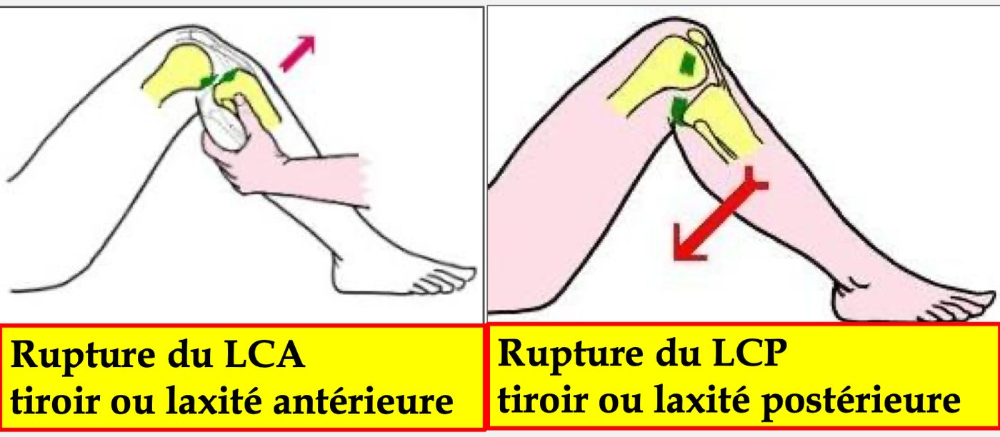

S1 · Anatomy · Summary
Knee joint
- Essentials
- 2 joints
- Articular surfaces
- Capsule
- 3 ligament systems
- Active ligaments
- Movements
- Clinical
- Exam traps
- Self-check
If you remember only this
- Knee = large, superficial, weight-bearing joint (thigh ↔ leg) with 2 inseparable joints in one capsule: patellofemoral (ginglymus, core of the extensor mechanism) and femorotibial (bicondylar, flexion–extension).
- Menisci = intra-articular semilunar fibrocartilages that deepen the tibial glenoids: medial "C", lateral "O".
- Capsule: anterior window for the patella; adheres laterally to the menisci; thickened behind = condylar shells (lateral one may hold the fabella).
- Collateral system (tibial + fibular collateral ligaments) → lateral stability; injury → gapping / lateral laxity.
- Central pivot (cruciate ligaments) → anteroposterior stability; injury → drawer sign.
- Active flexion 140° hip flexed / 120° hip extended; passive flexion 160° (squatting). Rotation (knee at 90°): medial 30°, lateral 40°.
Introduction p. 3 2025-26
- Large, superficial joint connecting thigh and leg; weight-bearing, with a ligament and tendon apparatus giving stability standing (bipedal support) and walking (unipedal support).
- 2 joints, anatomically and functionally inseparable, in the same capsule:
| Joint | Type | Role |
|---|---|---|
| Patellofemoral | Ginglymus (trochlear) | Primary element of the extensor mechanism |
| Femorotibial | Bicondylar | Flexion–extension |

1. Articular surfaces p. 3
| Surface | Features |
|---|---|
| Patellar surface of the femur | Anterior face of the distal femur; ↔ posterior face of the patella; lateral slope larger than the medial |
| Femoral condyles (medial, lateral) | Curved surfaces rolled on themselves; below ↔ menisci and the 2 superior tibial surfaces; in front ↔ posterior patella |
| Tibial plateau | Superior tibial articular surfaces (glenoid cavities) ↔ menisci and condyles; separated by the intercondylar space with the intercondylar tubercles (tibial spines) |
| Posterior face of the patella | Articular in its upper 2/3; ↔ patellar surface of the femur |
| Menisci | Intra-articular, semilunar fibrocartilages between condyles and tibial surfaces; increase the concavity of the tibial glenoids. Medial = "C", lateral = "O" |


2.1 Joint capsule p. 4 2023-24
- Fibrous, cylinder-shaped sleeve connecting the surfaces, inserted more or less close to the cartilage.
- Front: a window in which the patella sits.
- Sides: adheres to the peripheral face of the menisci.
- Back: thickened over the condyles = condylar shells; the lateral shell contains an inconstant sesamoid bone, the fabella.
2.2 Passive ligaments — 3 systems p. 4–5 2023-24 · 2025-26
| System | Ligaments | Stability | Injury sign |
|---|---|---|---|
| Collateral 🎯 | Tibial collateral (medial): epiphyso-diaphyseal Fibular collateral (lateral): epiphyso-epiphyseal (slides) |
Lateral (collateral) | Gapping / medial or lateral laxity |
| Central pivot 🎯 | Anterolateral cruciate: anterior intercondylar area → backward and outward → medial face of the lateral condyle Posteromedial cruciate: posterior intercondylar area → vertical → lateral face of the medial condyle | Anteroposterior | Drawer (ACL rupture = anterior drawer, PCL = posterior drawer) |
| Sagittal | Front: patellar ligament (inseparable from the quadriceps tendon), patellar apex → anterior tibial tuberosity Back: arcuate ligament, from the fibular head, fan-shaped → lateral condylar shell + fabella and medial condylar shell | — | — |
- Patellar retinacula (patellar wings): patella → each epicondyle; the medial is wider and stronger.
- Menisco-patellar ligaments: patella → menisci.

Memory trick
Collateral → Côté (side-to-side) stability, gapping. Cruciate → front–back, drawer.
2.3–3. Active ligaments and synovium p. 5
| Side | Muscles / tendons |
|---|---|
| Front | Quadriceps tendon → patellar ligament. Extensor apparatus = quadriceps muscle + quadriceps tendon + patella + patellar tendon |
| Back | Semimembranosus, biceps femoris, popliteus |
| Medial | Pes anserinus ("goose foot"): sartorius, gracilis, semitendinosus |
| Lateral | Expansion of the tensor fasciae latae |
The synovium lines the deep face of the capsule and forms in front a large recess, the quadriceps cul-de-sac.
4. Joint physiology p. 5–6 2023-24 · 2025-26
| Movement | Reference position / definition | Range |
|---|---|---|
| Extension | Leg axis in line with thigh axis. Front of the leg toward front of the thigh. Locked: exists only from a flexed position | — |
| Active flexion 🎯 | Back of the leg toward back of the thigh, by muscle action | 140° hip flexed · 120° hip extended |
| Passive flexion 🎯 | Sitting on the heels (squatting) | 160° |
| Medial rotation | Knee bent 90°, toes forward; toes turn inward | 30° |
| Lateral rotation | Toes turn outward | 40° |
5. Clinical applications p. 6
- Imaging: standard X-rays, ultrasound, CT (± arthrography = arthroscan), MRI (± arthrography = arthro-MRI); arthroscopy.
- Frequent trauma site, especially in athletes; the most frequent injury is a meniscal tear. Also sprains, dislocations, fractures.
- Gonarthrosis (knee osteoarthritis) is common in older people.
Exam traps
False statements to recognise
- The capsule "thickens anteriorly to form the condylar shells" or "has a window for the fabella" — false: shells behind; window = patella. 2023-24
- The collateral system "is formed by the cruciate ligaments", "gives a drawer", "ensures anteroposterior stability" — false (that's the central pivot). 2023-24
- The central pivot "is the collateral or patellar ligament", "ensures lateral stability" — false. 2025-26
- The knee includes the "tibiopatellar" or "tibiofibular" joints — false: patellofemoral + femorotibial only. 2025-26
- Active flexion with hip extended = 130–160° — false: 120°. Passive flexion = 160°. 2 years
Self-check
Which 2 joints form the knee, and what type is each?
Patellofemoral (ginglymus, extensor mechanism) and femorotibial (bicondylar, flexion–extension), in one capsule.
Which part of the patella is articular?
The upper 2/3 of its posterior face.
Role and shape of the menisci?
Increase the concavity of the tibial glenoids; medial "C", lateral "O".
Describe the capsule front, sides and back.
Front: window for the patella. Sides: adheres to the menisci. Back: thickened = condylar shells (fabella in the lateral one).
Collateral system: ligaments, stability, sign of injury.
Tibial and fibular collaterals; lateral stability; gapping / medial or lateral laxity.
Trace the two cruciate ligaments.
Anterolateral: anterior intercondylar area → backward and outward → medial face of the lateral condyle. Posteromedial: posterior area → vertical → lateral face
of the medial condyle.
What makes up the sagittal system?
Patellar ligament (front) and arcuate ligament (back).
What is the extensor apparatus?
Quadriceps muscle, quadriceps tendon, patella, patellar tendon.
Which muscles form the pes anserinus?
Sartorius, gracilis, semitendinosus.
Knee flexion ranges (active ×2, passive) and rotations.
Active 140° hip flexed, 120° hip extended; passive 160°; medial rotation 30°, lateral 40°.
Most frequent knee injury? Common disease in the elderly?
Meniscal tear; gonarthrosis.